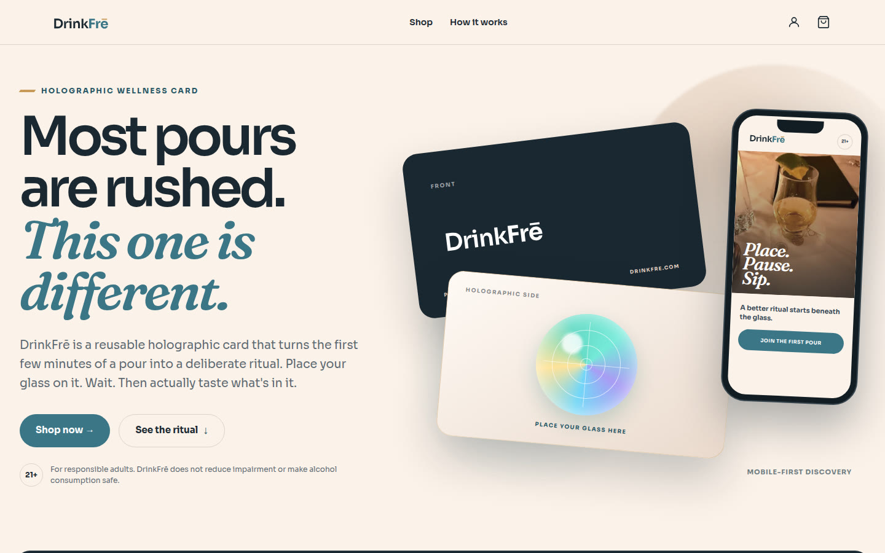
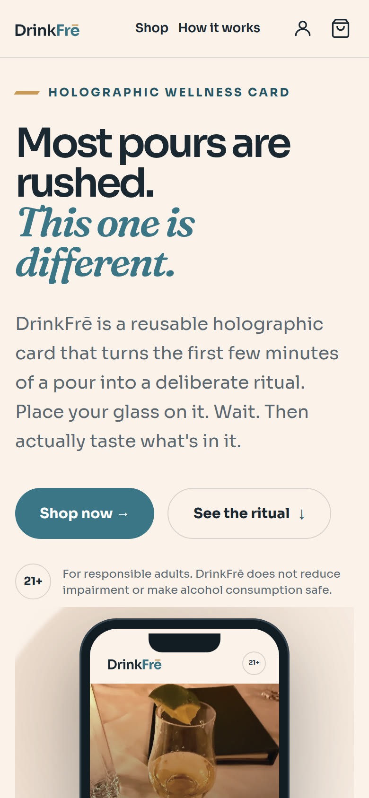

Selected Work / Case Study № 06
product website · holographic card
DrinkFrē · drinkfre.com
Most pours are rushed. This one is different.
DrinkFrē is a reusable holographic card that turns the first few minutes of a pour into a deliberate ritual. Place your glass on it. Wait. Then actually taste what's in it.

The Brief
Place. Pause. Sip.
The programmed holographic element never touches your beverage. The experience begins beneath the glass and fits naturally into the first few minutes of a pour.
Line on the live homepageFor responsible adults. DrinkFrē does not reduce impairment or make alcohol consumption safe.
The work grid spells the name DrinkFre. The live title and logo use DrinkFrē.
02 — Identity
Tokens from the stylesheet
Swatches are the color tokens in the live stylesheet. --df-font-body is Sora and --df-font-serif is Fraunces. Geist is also named in that file.
Color
Primary
--color-primary#0e6e72
Secondary
--color-secondary#d39562
Accent
--color-accent#d39a62
Surface
--color-base-100#fff5ed
Text
--color-base-content#041419
Type
Aa Bb
ABCDEFGHIJKLMNOPQRSTUVWXYZ · abcdefghijklmnopqrstuvwxyz · 0123456789
Fraunces · --df-font-serif
Aa Bb
ABCDEFGHIJKLMNOPQRSTUVWXYZ · abcdefghijklmnopqrstuvwxyz · 0123456789
Sora · --df-font-body. Geist is also named in the stylesheet.
Logo
Live file brand/drinkfre-logo-color.svg.

Screenshot pending — content needed
A second mobile screen was not in the prototype files or this repo. The Hive study shows two phones. This page has the one homepage capture stored for the work grid.
03 — Mobile
Mobile-first discovery
Those three words are a label on the live homepage, next to the product. The phone frame is the homepage screenshot stored with this work page.
Results pending — content needed
No load time or before-and-after figure is in a project guide or scope file. Numbers that appear above are lines printed on the live homepage, not a measured outcome of this page.
04 — In Detail
Lines from the live homepage
Screenshot pending — content needed
Section crops were not in the source files. The three notes below are homepage lines, not separate screenshots.
Homepage
Place
Set your wine or spirits glass directly over the holographic side of the card.
Homepage
Pause
Leave the glass in place for 3–5 minutes. Nothing is added to the beverage.
Homepage
Sip
Taste with intention and notice the experience for yourself. Results may vary.
Quote pending — content needed
No named quote or testimonial was copied. Homepage review counts, where the site prints them, stay in the brief as the site's own line.
05 — The long scroll
Homepage viewport
The image is the homepage capture already in this repo. It is the top of the page, not a stitched full-page scroll.
Screenshot pending — content needed
A full-page scroll capture is not in the source files.